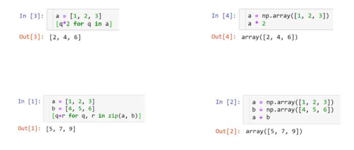
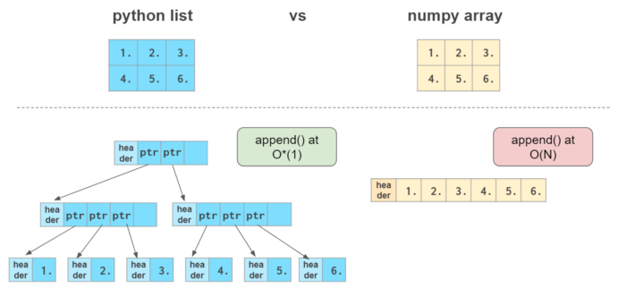
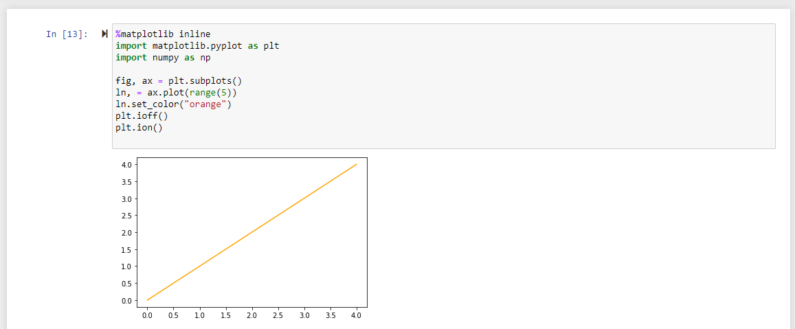
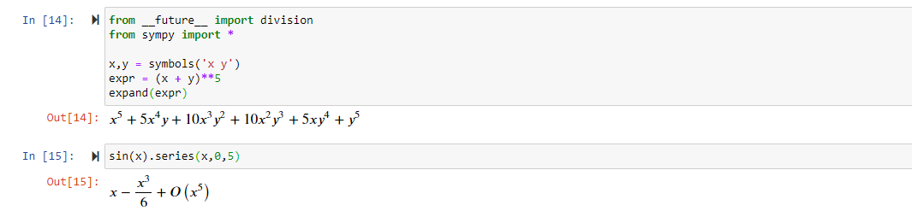

Modern Programming for Data Analytics - NumPy and SciPy
NumPy -Python Library for working with arrays
- Enables numerical computing in Python
- Linear algebra, fourier transforms, and matrices
- Created in 2005 by Travis Oliphant
- Open Source and freely available
- Written in Python, with backend parts in C,C++, Fortran77
- Is the fundemental library for pandas and other libraries work seemlessly
Numpy Array vs. Python List
NumPy introduces the np.array data structure
Numpy Array vs. Python List
NumPy Notebook Example
NumPy Resources
NumPy is not a library you can learn by reading, it is really needs to be used. Once you have the basic concepts down, there is so much functionality that can be expored.
- NumPy User Guide - Gives overview and details about NumPy
- NumPy Reference - Gives a detailed reference of all of the functions and classes that come with NumPy
- Jay Alammar's A Visual Intro to NumPy and Data Reprentation
- Tutorial Point - Learn NumPy
SciPy
- A Python-based ecosystem of open-source software for mathematics, science, and engineering.
- It includes several packages including:
- NumPy
- SciPy Library - a fundemental library for scientific computing
- Matplotlib - a comprehensive 2-D visualization library
- IPython - an enhanced interactive console
- You already have seen this with Jupyter Notebooks
- SymPy - a package for symbolic math
- Pandas - a dataframe framework for Python
Matplotlib
import matplotlib.pyplot as plt
import numpy as np
x = np.linspace(0, 2, 100)
plt.plot(x, x, label='linear')
plt.plot(x, x**2, label='quadratic')
plt.plot(x, x**3, label='cubic')
plt.xlabel('x label')
plt.ylabel('y label')
plt.title("Simple Plot")
plt.legend()

Matplotlib Resources
Matplotlib is not a subject to be lectured, it is much better to learn by example and doing, so here are some links below to get you started
Advice: find something that you like and alter it rather than trying to do from scratch
Matplotlib in Jupyter Notebooks
Matplotlib can be embedded in Jupyter Notebooks, one needs to add the following:
SymPy
SciPy Library
- This is actually what most people think of when they think of SciPy.
- A collection of mathematical algorithms and convenience functions built on NumPy
- Includes many function that would be thought of to be in LAPACK
SciPy Library...err... Libraries
- scipy.special - provides universal and commonly used functions (e.g. Bessel, Gaussian, Gamma, etc.)
- scipy.integrate - provides several numerical integration techniques including quadrature and sampling and differential equation solvers
- scipy.optimize - provides functions for minimizing / maximizing uncontrained and contstrained objective functions, non-linear solvers, linear programming, curve-fitting, and root finding.
- scipy.interpolate - provides spline functions, 1-D and N-D univariate and multivariate interpolation, and Lagrange and Taylor polynomial interpolators.
SciPy Library...err... Libraries (cont.)
- scipy.fft - provides discrete fast Fourier transforms in multiple dimensions
- scipy.signal - provides a toolbox for signal processing including a limited set of filter design tools and B-spline interpolation algorithms
- scipy.integrate - provides optimized LAPACK and BLAS routines for fast linear algebra operations
- scipy.sparse.csgraph - provides fast graph altorighms based on sparse matrix representations
SciPy Library...err... Libraries (cont.)
- scipy.spatial - provide spatial data structures and algorithms such as triangulations, Voronoi diagrams; provides and interface to the Qhull library
- scipy.stats - provides a large number of methods for working with probability distributions, summary and frequency statistics, correlation functions, and statistical tests, masked statistics, kernel density estimation, quasi-Monte Carlo functionality
- scipy.ndimage - provides image processing capabilities, such as linear and non-linear filters, binary morphology, B-spline interpolation, and object measurements.
- scipy.io - provides capabilities to open and parse a number of file formats including Matlab, NetCDF, IDL, and Matrix Market files